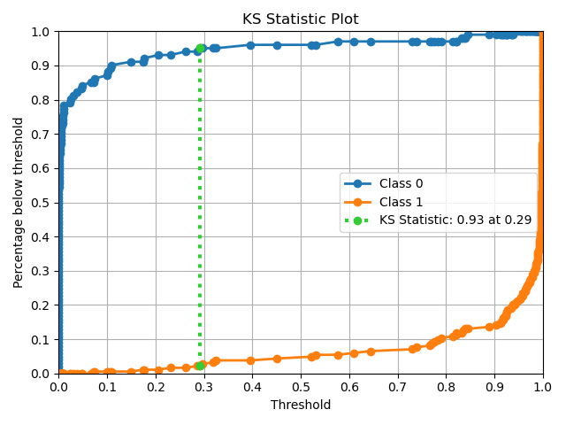
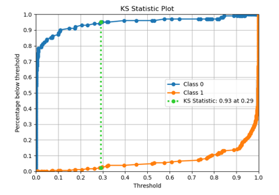
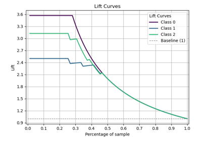
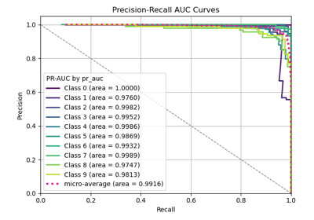
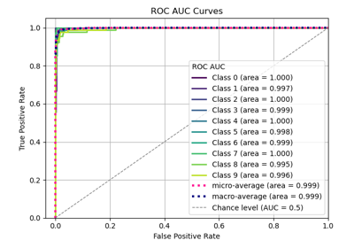

plot_ks_statistic with examples#
An example showing the plot_ks_statistic method used by a scikit-learn classifier
# Authors: scikit-plots developers
# License: MIT
from sklearn.datasets import (
make_classification,
load_breast_cancer as data_2_classes,
load_iris as data_3_classes,
load_digits as data_10_classes,
)
from sklearn.model_selection import train_test_split
from sklearn.linear_model import LogisticRegression
from sklearn.naive_bayes import GaussianNB
from sklearn.svm import LinearSVC
from sklearn.ensemble import RandomForestClassifier
from sklearn.model_selection import cross_val_predict
import numpy as np; np.random.seed(0)
# importing pylab or pyplot
import matplotlib.pyplot as plt
# Import scikit-plot
import scikitplot as skplt
# Load the data
X, y = data_2_classes(return_X_y=True, as_frame=False)
X_train, X_val, y_train, y_val = train_test_split(X, y, test_size=0.5, random_state=0)
# Create an instance of the LogisticRegression
model = LogisticRegression(max_iter=int(1e5), random_state=0).fit(X_train, y_train)
# Perform predictions
y_val_prob = model.predict_proba(X_val)
# Plot!
ax = skplt.deciles.plot_ks_statistic(
y_val, y_val_prob
);
# Adjust layout to make sure everything fits
plt.tight_layout()
# Save the plot to a file
# plt.savefig('plot_ks_statistic_script.png')
# Display the plot
plt.show(block=True)
Total running time of the script: (0 minutes 0.862 seconds)
Related examples

plot_ks_statistic with examples
plot_ks_statistic with examples

plot_lift_curve with examples

plot_precision_recall with examples
plot_precision_recall with examples

plot_roc_curve with examples